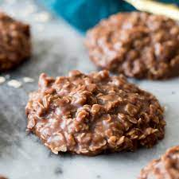

No Bake Cookies

Soft No Bake Cookies
A super fast, super easy to make cookie made with chewy oatmeal, rich cocoa and creamy peanut butter. They're perfectly fudgy and always just too good to resist! A childhood favorite that I'm still making all the time.
Ingredients
- 1/2 cup (113g) salted butter
- 1 3/4 cups (350g) granulated sugar
- 1/3 cup (32g) unsweetened cocoa powder
- 1/2 cup (120ml) milk
- 1 tsp vanilla extract
- 2/3 cup (160g) creamy peanut butter
- 3 cups (275g) quick oats (don't use old fashioned oats)
Steps
- Line two baking sheets with parchment paper or set out approximately 29 cupcake liners.
- In a 2.5 to 3 quart medium saucepan combine butter, sugar, cocoa, and milk.
- Set over medium heat, and cook stirring frequently until it reaches a full boil.
- Allow mixture to boil 60 seconds without stirring.
- Remove from heat, immediately add in vanilla, peanut butter and quick oats.
- Stir mixture until well combined then, using a medium (2 Tbsp) cookie scoop or two spoons drop mixture onto lined baking sheets or into cupcake liners.
- Allow to rest at room temperature until set, about 20 - 30 minutes (to speed up setting refrigerate).
- Store cookies in an airtight container at room temperature.